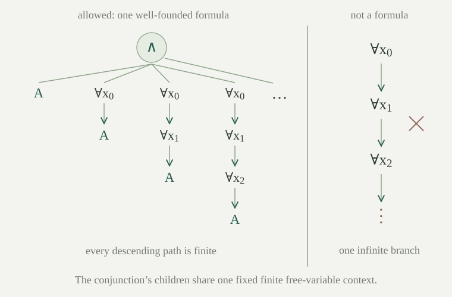

Fix a first-order language \(L\), with the same finite-arity function and relation symbols, equality, and finite terms as in first-order syntax. A finite variable context is a finite list of distinct available variables. A formula in a context may leave some of those variables unused. Whenever a quantifier is formed, choose a new variable for its body; this new variable becomes bound when the quantifier is closed.
The infinitary formulas of \(L_{\omega_1\omega}\) are generated by the following rules. Atomic equations and relation formulas whose variables belong to a finite context are formulas in that context. Falsity \(\bot\) is a formula. If \(\varphi,\psi\) are formulas in one context, then \(\varphi\to\psi\) is a formula there. If \(\varphi\) is a formula in the context enlarged by a fresh \(x\), then \(\forall x\,\varphi\) is a formula in the original context. Finally, for a sequence \((\varphi_i)_{i\in\mathbb N}\) of formulas in one fixed finite context,
is a formula in that context. Thus a countable conjunction must have only finitely many free variables altogether, not merely finitely many in each conjunct. For example, \(\bigwedge_i P_i(x)\) is allowed, whereas \(\bigwedge_i P(x_i)\), with all \(x_i\) distinct and free, is not. Adding unused variables to a finite context changes no occurrences or binding; it lets finitely many previously formed formulas be compared in their common finite context.
Use the usual connective abbreviations: \(\neg\varphi\) means \(\varphi\to\bot\), \(\top\) means \(\neg\bot\), and binary conjunction, disjunction, existential quantification and biconditional have their ordinary classical definitions. The countable disjunction \(\bigvee_i\varphi_i\) means \(\neg\bigwedge_i\neg\varphi_i\). A finite or empty conjunction is also allowed: list its finitely many entries and fill the remaining positions with \(\top\). Empty conjunction is therefore true, and empty disjunction is false. A sentence is a formula in the empty context.
Every formula just defined has a well-founded, at most countable syntax tree. Structural induction is valid, with an induction hypothesis for every conjunct at a countable-conjunction node. A formula need not have a finite bound on the depths of its subformulas.
The rules generate the least collection closed under the stated constructors. Equivalently, use well-founded rooted trees labeled by constructors, with finitely many children at the ordinary constructors and children numbered by natural numbers at a countable conjunction. Each child is strictly below its parent in the well-founded relation. There is no infinitely descending chain of successive subformulas: a circular instruction such as \(\varphi=\neg\varphi\) specifies no formula. Induction over this relation proves the structural-induction principle, including the simultaneous hypotheses for all numbered children.
Every node is reached by a finite list of child numbers. There are countably many finite lists of natural numbers, so there are at most countably many nodes. Bound variables increase the context only along such a finite path; every context remains finite. However, take formulas \(\theta_n\) with \(n\) successive quantifiers and conjoin them over all \(n\). Their depths are unbounded, although each descending path through the resulting tree is finite. Consequently induction on one global natural-number depth would not cover all the formulas.
The subscript \(\omega_1\omega\) records countable conjunctions and disjunctions, together with finite quantifier strings. It does not permit a single infinite quantifier prefix. The language itself may have any set of symbols; countability here concerns each individual formula.

Let \(M\) be a nonempty \(L\)-structure and let \(a\) assign elements of \(M\) to the formula's finite context. Define infinitary satisfaction, written \(M,a\models\varphi\), by well-founded recursion. Evaluate the unchanged finite terms in \(M\). Atomic equations assert equality of their term values, atomic relations use the interpreted relation, \(\bot\) is false, and implication has its classical truth condition. The remaining clauses are
The assignment \(a[x:=b]\) extends the finite context by the fresh variable \(x\). The recursion is legitimate because every referenced formula is an immediate proper subformula in a well-founded tree. Classical negation gives \(M,a\models\bigvee_i\varphi_i\) exactly when \(M,a\models\varphi_i\) for some \(i\). For a sentence, write \(M\models\varphi\), using the unique empty assignment.
An infinitary theory is a set \(T\) of these sentences. A model of \(T\) is one nonempty structure satisfying every member; \(T\) is satisfiable when it has a model and finitely satisfiable when every finite subset has a model. An infinite theory of ordinary first-order sentences and one infinitary sentence are different syntactic objects, even when their satisfaction conditions agree.
There is an injective translation \(\iota\) from ordinary first-order formulas in any fixed finite context into the infinitary formulas in that context. It retains terms, atoms, falsity, implication and quantifiers. For every such formula \(\varphi\), structure \(M\) and assignment \(a\),
Define the translation recursively on the actual finite syntax: translate each atomic constructor identically, put \(\iota(\varphi\to\psi)=\iota(\varphi)\to\iota(\psi)\), and put \(\iota(\forall x\,\varphi)=\forall x\,\iota(\varphi)\). No countable-conjunction constructor occurs in the image. Distinct finite constructor trees remain distinct constructor trees, so induction on two such trees proves injectivity.
For truth preservation, induct on the finite formula, allowing any assignment to its context. The atomic cases use literally the same term evaluations and interpretations. Falsity and implication use the same truth conditions and the induction hypotheses. For a universal formula, apply the body hypothesis to every assignment \(a[x:=b]\). The two universal statements then quantify over exactly the same elements \(b\in M\).
Every ordinary first-order formula has a finite set of free variables, so it can be placed in a finite context before applying \(\iota\). The translation is a conservative inclusion at the level of truth; no proof calculus for the enlarged syntax is being assumed.
If \(f:M\to N\) is an isomorphism of \(L\)-structures, then for every infinitary formula \(\varphi\) and context assignment \(a\),
Induction on finite terms gives \(f(t^M[a])=t^N[f\circ a]\), since an isomorphism preserves each function symbol. Its injectivity preserves and reflects equality, and its preservation and reflection of each relation handles atomic formulas. Falsity and implication follow from their truth conditions.
At a countable conjunction apply the induction equivalence separately for each index, then take the universal condition over those same indices. At \(\forall x\,\psi\), the body hypothesis compares the assignments \(a[x:=b]\) and \((f\circ a)[x:=f(b)]\). Every element of \(N\) is some \(f(b)\), by surjectivity, so the universal conditions agree. These are all constructors, and well-founded structural induction completes the proof.
In particular, isomorphic structures satisfy the same infinitary sentences. Countably many connectives increase expressive power without making truth depend on the names assigned to the underlying elements.
For each \(n\in\mathbb N\), let \(\chi_n\) be the ordinary first-order size sentence saying that there are at least \(n\) distinct elements:
The infinitary sentence \(\operatorname{Inf}:=\bigwedge_{n\in\mathbb N}\iota(\chi_n)\) is true in a nonempty \(L\)-structure exactly when its domain is infinite. Its negation is true exactly in the finite structures.
The matrix is a finite conjunction. For \(n=0\), it is empty and the quantifier string is empty, so \(\chi_0\) is true. For general \(n\), witnesses for \(\chi_n\) are precisely an injective listing of \(n\) elements. Every infinite set has such a listing for each natural number. Conversely, a domain of size \(k\) cannot contain \(k+1\) distinct elements, by the finite pigeonhole principle. Truth preservation and the countable-conjunction clause give the asserted equivalence.
The language needs no special symbols for this sentence: equality suffices. The ordinary first-order theory \(\{\chi_n:n\in\mathbb N\}\) already expresses infinity by infinitely many separate requirements. The new step combines all of them into one formula, whose negation can occur inside another formula.
In the equality language, the countable infinitary theory \(T=\{\iota(\chi_n):n\in\mathbb N\}\cup\{\neg\operatorname{Inf}\}\) is finitely satisfiable but unsatisfiable.
Let \(F\subseteq T\) be finite. For each member of \(F\) other than \(\neg\operatorname{Inf}\), choose an index \(n\) representing it as \(\iota(\chi_n)\). Only finitely many indices are needed. Choose a positive integer \(k\) at least all of them, and take a domain with exactly \(k\) elements. This structure satisfies the selected size requirements. It also satisfies \(\neg\operatorname{Inf}\), because its domain is finite, whether or not that sentence was selected in \(F\). Thus it satisfies \(F\). If there were no size requirements, \(k=1\) works.
A model of the whole theory would satisfy every \(\chi_n\), hence have infinite domain. But \(\neg\operatorname{Inf}\) requires finite domain. This contradiction proves unsatisfiability.
The failure is already for a countable theory in a finite language and with an explicit finite model for each finite subset. It is the first-order analogue of the local propositional infinite-conjunction counterexample. Ordinary first-order compactness applies to finite formulas; the new sentence \(\neg\operatorname{Inf}\) lies outside that hypothesis.
Is \(\operatorname{Inf}\) equivalent, over all nonempty structures in the equality language, to any ordinary first-order sentence?
No. Suppose a first-order sentence \(\theta\) were true exactly on infinite domains. The entirely first-order theory \(\{\chi_n:n\in\mathbb N\}\cup\{\neg\theta\}\) is finitely satisfiable: a large enough finite domain satisfies every selected size requirement and also \(\neg\theta\). First-order compactness gives a model of the entire theory. Every \(\chi_n\) holds there, so the domain is infinite and \(\theta\) is true; yet \(\neg\theta\) is also true, a contradiction. Thus the countable connective adds expressive power even though its atomic and quantifier semantics remain first-order.
Use the language with one constant \(0\) and one unary function \(S\). Define the numeral terms by \(t_0=0\) and \(t_{n+1}=S(t_n)\). They are finite terms, even though the family is infinite. Define the successor sentence
The countable disjunction has the single free variable \(x\) before the outer quantifier is applied; the same \(x\) occurs in every disjunct. Its truth says that every element is obtained from \(0\) by some externally finite number of applications of \(S\). The first two conjuncts require zero to have no predecessor and successor to be injective. A successor isomorphism is a bijection \(f\) preserving the distinguished zero and satisfying \(f(Sa)=S(f(a))\) for every \(a\).
A nonempty structure in the language \(\{0,S\}\) satisfies \(\sigma_{\mathrm{succ}}\) if and only if it is isomorphic to \((\mathbb N,0,n\mapsto n+1)\). When it satisfies the sentence, the isomorphism from \(\mathbb N\) is the specified map \(f(n)=t_n^M\).
In the natural numbers, successor never gives zero, successor is injective, and every number is the value of its numeral. Hence the standard structure satisfies the sentence. Isomorphism invariance gives the same conclusion for every isomorphic structure.
Conversely, suppose \(M\models\sigma_{\mathrm{succ}}\) and define \(f(n)=t_n^M\). Term evaluation gives \(f(0)=0^M\) and \(f(n+1)=S^M(f(n))\). The last conjunct makes \(f\) surjective. To prove injectivity, use induction on \(n\), with the statement that \(f(n)=f(m)\) implies \(n=m\) for every \(m\). At \(n=0\), a positive \(m\) would express zero as a successor, so \(m=0\). At \(n+1\), \(m=0\) is impossible for the same reason; write \(m=k+1\). Injectivity of \(S^M\) reduces equality to \(f(n)=f(k)\), and the induction hypothesis gives \(n=k\). Thus \(f\) is bijective and preserves the two symbols, as required.
This characterizes only the displayed successor language, with no assertions about additional operations. It uses a countable disjunction in place of full second-order induction. An ordinary first-order induction scheme cannot itself name the external set of numeral values, as explained in the distinction between formulas and all subsets.
Assume the displayed symbols are in the language. Which of \(\bigwedge_n\exists x\,P_n(x)\), \(\exists x\,\bigwedge_nP_n(x)\), \(\bigwedge_nP(x_n)\) with distinct free \(x_n\), and an infinite prefix \(\exists x_0\exists x_1\cdots\,\psi\) are permitted? Do the first two say the same thing?
The first two are permitted sentences. In the first, the bound variable in each conjunct can be chosen separately and the conjuncts have empty free context. In the second, all conjuncts share the one free variable before a single existential quantifier binds it. The third is excluded because the union of the free-variable sets is infinite. The fourth is excluded because quantifier constructors bind one variable at a time in a well-founded tree; the proposed prefix has an infinite descending chain of bodies.
The first two are not equivalent. On \(\mathbb N\), interpret \(P_n\) by the singleton \(\{n\}\). Every predicate has a witness, so \(\bigwedge_n\exists x\,P_n(x)\) is true. No one element belongs to every singleton, so \(\exists x\,\bigwedge_nP_n(x)\) is false. The second sentence always implies the first: use its one witness separately for each conjunct.